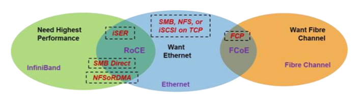
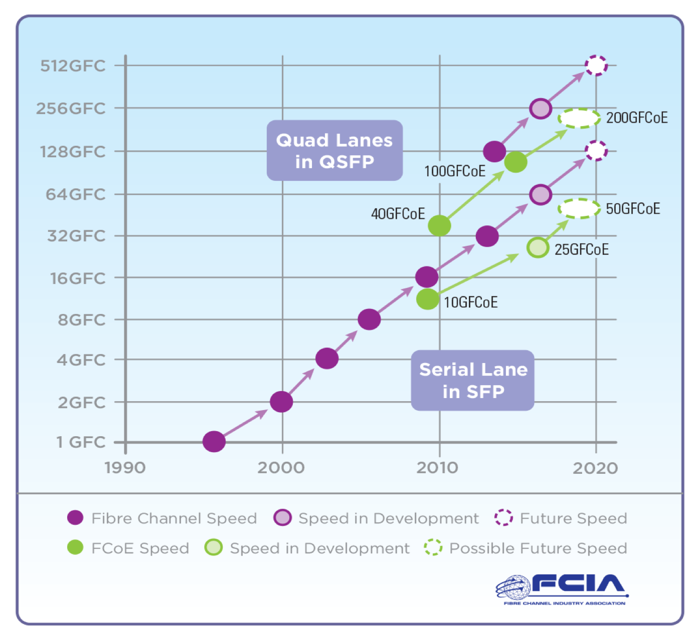
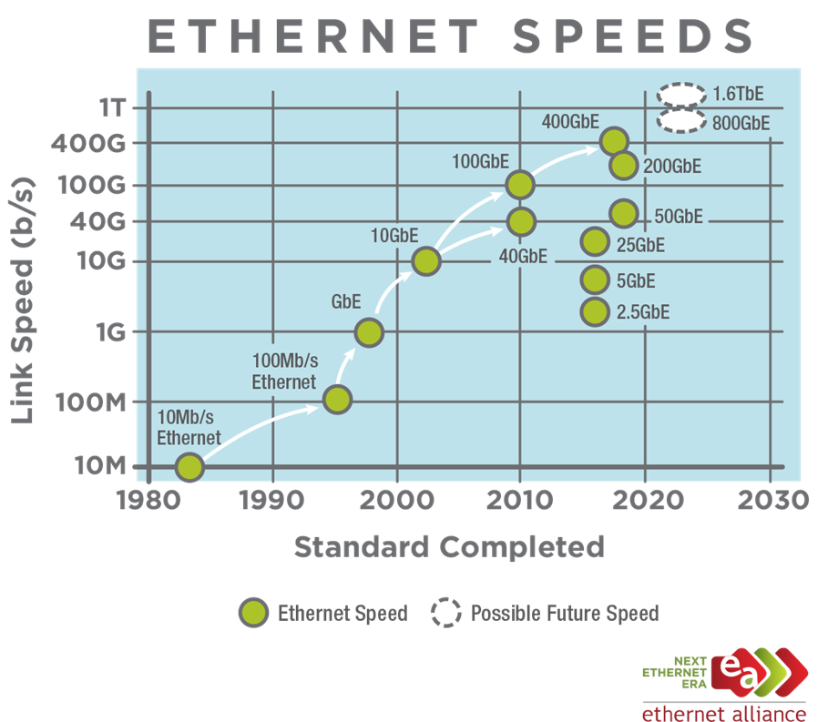
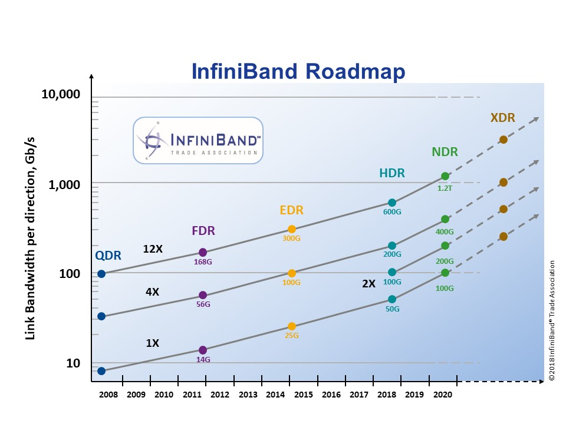
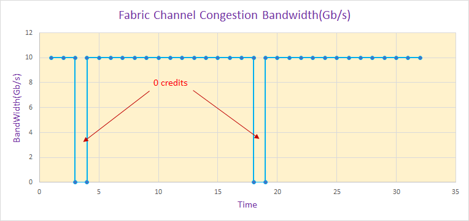
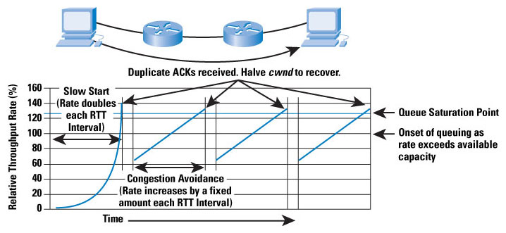

Ethernet, Fibre Channel and InfiniBand
Ethernet and its slower speed cousins are the networking technology of choice for client-server networks, Fibre Channel is the fabric technology for storage applications, and InfiniBand Architecture is introduced as a fabric technology for CPU-memory complex to adapter connections.
| Technology | Standards Body | Signaling Speed(Y2018) | First Standard | Maximum frame size | Primary Application |
|---|---|---|---|---|---|
| Ethernet | IEEE | 200Gb | Y1999 | 1.5K/9k | Local Area Network(LAN) |
| Fibre Channel | ANSI | 128Gb | Y1988 | 2K | Storage Area Network(SAN) |
| InfiniBand | InfiniBand Trade Association | 600Gb | Y2001 | 4K | IO Area Network(IAN) |
Network Technology Choices in the Data Center(bandwidth, latency and reliability):

RoadMap
Fibre Channel RoadMap
Fibre Channel is doomed:
- Modern Ethernet Outperforms Fibre Channel
- iSER(iSCSI Extensions for RDMA) Turbocharges iSCSI
- Flash: Fast Storage Needs Fast Networking, but speed of FC’s improvement is slower than ethernet
Ethernet RoadMap
InfiniBand RoadMap

Reliability, congestion control, over-subscription or over-commit
Fibre Channel, Lossless data delivery with buffer to buffer credit, congestion strategy is “pause it”.
Fibre Channel Performance: Congestion, Slow Drain, and Over Utilization
Ethernet, based on Transport Layer Protocols, congestion strategy is “drop it”.

Conclusion
There are a variety of switched fabrics and networks to apply to the problem of server I/O. The selection of the “best” technology depends on particular situations, legacy installations, and the desired application. The Ethernet technologies are well suited for client-server connections in a LAN environment, and Fibre Channel technology is the well suited for storage applications in a SAN. InfiniBand is a new technology well suited for interconnection of CPU-memory complexes to I/O in an IAN. A fabric-based IAN enables clustering as well as connections to I/O controllers.
The comparison of these three, layered technologies demonstrated a striking similarity, yet there are subtle differences evident in specific installations. The management model of these three technologies is different, each one supporting the needs of the application. Ethernet network management is loosely defined, and is tolerant of peer nodes joining and leaving segments. There is no need for a node to communicate with a central management entity. This pure peer-to-peer network has few dependencies on the existence of particular nodes, which can be good when a network spans hundreds of offices.
Management of a fabric is better defined out of necessity. The fabric manager must configure each node as it joins the fabric. It implements partitioning and provides a central directory to discover attached nodes. Fibre Channel defines a fabric manager to reside in the fabric, and relies upon proprietary implementations to expand management across many switches. InfiniBand takes this one step further and defines the management entity such that it can reside on any node of the network. It configures and manages the subnet in a manner defined by the InfiniBand Architecture Specification.
Application protocols traditionally favor particular technologies. Most client-server communication is based on TCP/IP or similar protocols. Storage protocols are based on SCSI-3 in the enterprise environment. The protocols used between CPU-memory complexes and adapters have been a mix of bus protocols and custom control messages, and InfiniBand Architecture will standardize these connections. InfiniBand also enables a new level of clustering by allowing CPU-memory complexes to directly communicate using the IAN.
The future belongs to ethernet and infiband, Fibre Channle will be out?
Ethernet is really easy to build for one, two, three, even four user Ethernet SAN, cause you’ll end up with oversubscription. Unfortunately, errors can still happen- Ethernet is not a guaranteed in-order delivery, nor a guaranteed latency, Fibre Channel is.
With fibre channel, in-order guaranteed latency is possible, and scalable to larger amounts of systems.
Ultimately, with Ethernet you can find yourself with multiple drop-frames and other issues during a production.